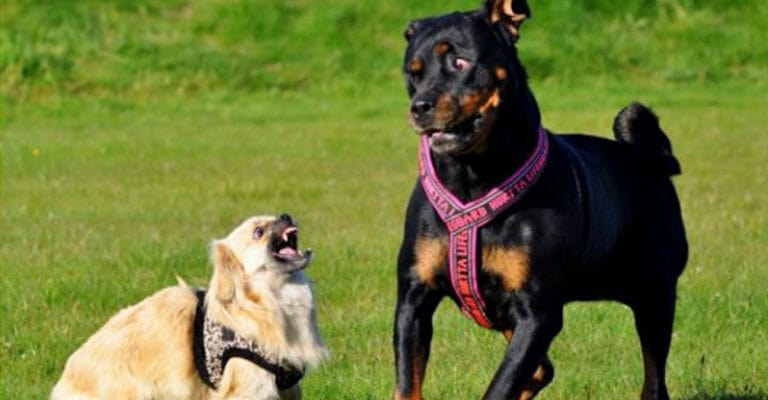

¿A qué se debe el comportamiento agresivo de las mascotas?

La educación con reglas y límites desde cachorros permiten establecer quien manda en la
relación y evitar comportameintos poco deseables en el futuro. La educación ideal es ni muy
permisiva ni muy estricta con un enfoque siempre positivo.
Adicionalmente existen factores que pueden desencadenar la agresividad en una mascota.
- La causa somos nosotros mismos al no reconocer que nos dicen que algo no les agrada.
- Está jugando, a veces simplemente no saben controlar su fuerza.
- Nuestra mascota se siente estresado o acorralado.
- Están enfadados o tienen una rabieta porque no atendemos sus peticiones pese a sus
alertas con nosotros.
- Se encuentran mal o están enfermos.